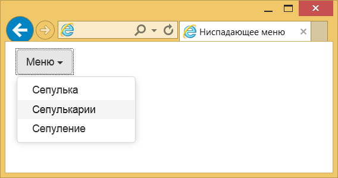
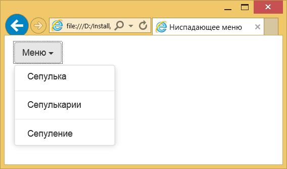
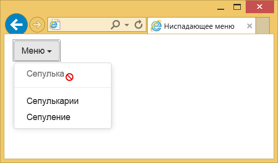
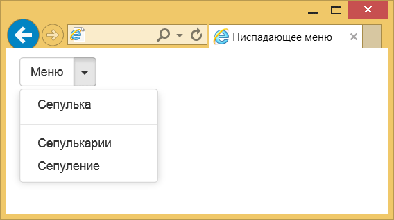

Ниспадающее меню
Такой тип меню прочно завоевал место в операционных системах и программах.
На сайтах также применяется довольно часто из-за своей компактности и иерархической структуры — каждый пункт меню может содержать подменю, а тот в свою очередь ещё одно.
Впрочем, из-за этого имеются некоторые проблемы связанные с удобством восприятия.
По виду меню невозможно сразу понять сколько пунктов оно содержит, а вложенные подменю затрудняют навигацию.
По этим причинам Microsoft в некоторых своих программах отказалась от ниспадающего меню в пользу ленточного интерфейса, как у Word.
Но главное, есть инструмент, а уж как им пользоваться решать вам, исходя из своих задач.
В Bootstrap само меню и кнопка для его вызова — это два разных элемента объединённых в один блок с классом dropdown.
Внутрь добавляем кнопку с атрибутом data-toggle и значением dropdown.
Традиционно возле текста указывается небольшая стрелка вниз — она означает, что пользователь имеет дело именно с ниспадающим меню, а не с обычной кнопкой или текстом.
Для её создания просто вставьте
Ниже кнопки мы добавляем список с пунктами меню и пишем класс dropdown-menu.
Всё остальное берёт на себя Bootstrap, так что дополнительных действий от нас не требуется.
В результате получим следующее меню.
Разделитель
Чтобы визуально отделить один или несколько пунктов меню от других применяется горизонтальный разделитель.
Вместо обычной ссылки вставьте пустой элемент
Результат данного примера:
Блокирование пунктов меню
Если некоторые пункты меню требуется сделать неактивными, то к элементу
Такой пункт меню будет виден, но он отображается другим цветом, на него нельзя щёлкнуть, а при наведении на пункт курсора мыши указатель меняется.
Открытое меню
Пользователю можно сразу показать открытое меню, тогда ему не придётся лишний раз щёлкать по нему чтобы посмотреть, что за ним скрывается.
Просто добавьте класс open к родительскому
Вид кнопок
Кроме добавления традиционных кнопок допустимо вставить кнопку, у которой стрелка от текста визуально отделена.
Для создания такого элемента сделаем две кнопки — одна с текстом, другая со стрелкой и объединим их в группу, добавив класс btn-group.
Поскольку мы теперь имеем дело с двумя кнопками, возможны разные эксперименты.
Например, можно задать разный цвет у кнопки с текстом и стрелкой или поменять их местами.
В данном случае белая стрелка на зелёном фоне будет слева от текста "Меню".